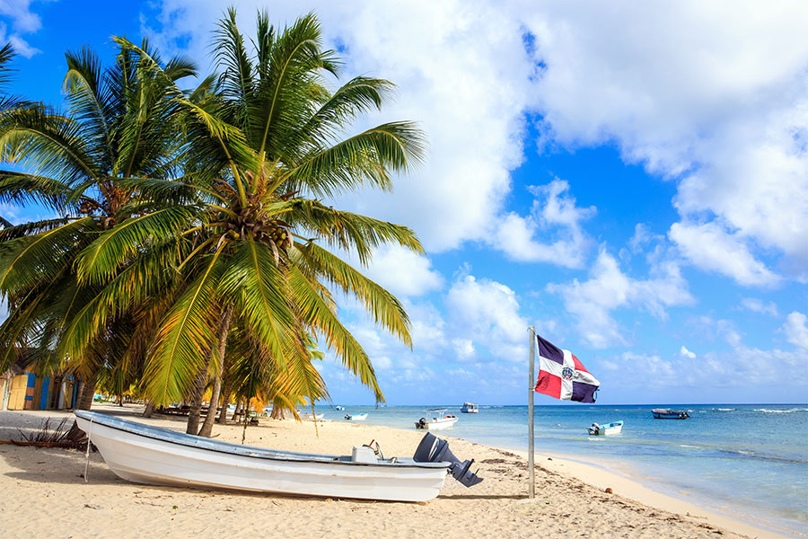
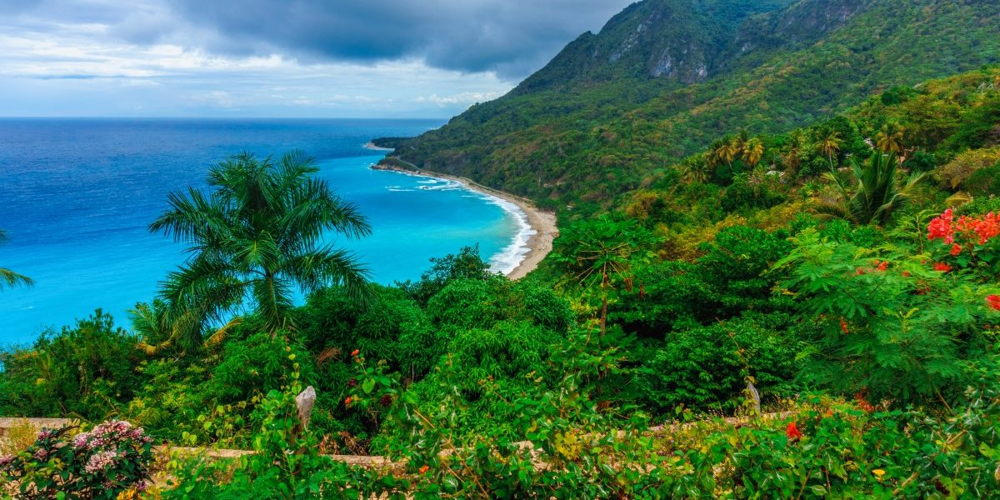
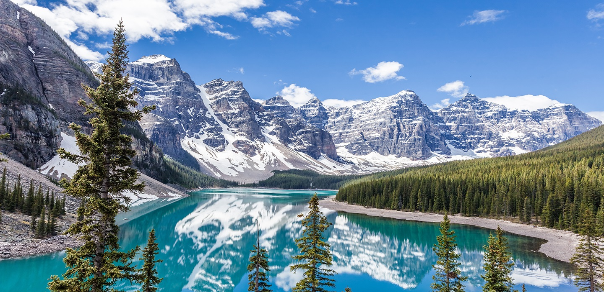
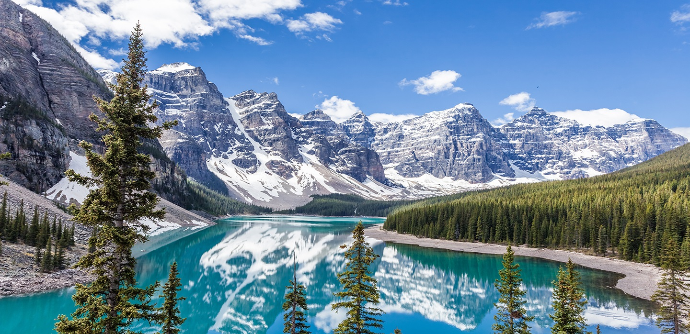
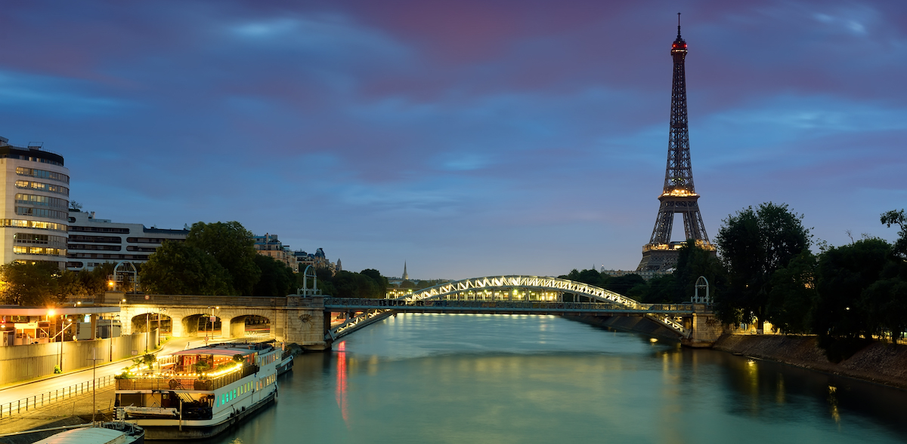
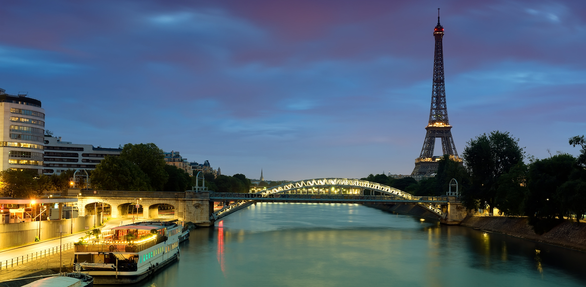
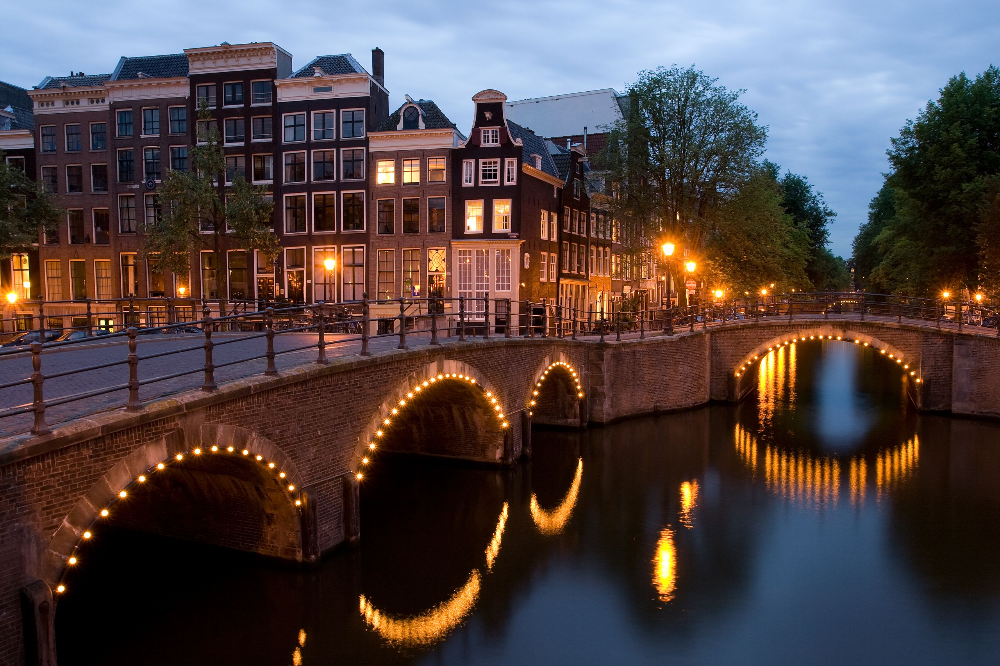

My Favorite Places
Traveling is life for me. I love to travel to different countries and get to know new people. There are many places that I could say that are my favorites but there are for sure 4 that I have to mention.
- Dominican Republic
The Dominican Republic is a Caribbean nation that shares the island of Hispaniola with Haiti to the west. It's known for its beaches, resorts and golfing. Its terrain comprises rainforest, savannah and highlands, including Pico Duarte, the Caribbean’s tallest mountain.


- Canada
Canada is a country in the northern part of North America. Its ten provinces and three territories extend from the Atlantic to the Pacific and northward into the Arctic Ocean, covering 9.98 million square kilometres, making it the world's second-largest country by total area.
 

- France
France, in Western Europe, encompasses medieval cities, alpine villages and Mediterranean beaches. Paris, its capital, is famed for its fashion houses, classical art museums including the Louvre and monuments like the Eiffel Tower. The country is also renowned for its wines and sophisticated cuisine.
 

- Amsterdam
It is the capital and most populous city of the Netherlands with a population of 872,680 within the city proper, 1,380,872 in the urban area and 2,410,960 in the metropolitan area.[9] Found within the province of North Holland,[13][14] Amsterdam is colloquially referred to as the "Venice of the North", attributed by the large number of canals which form a UNESCO World Heritage Site.


Back to the main page